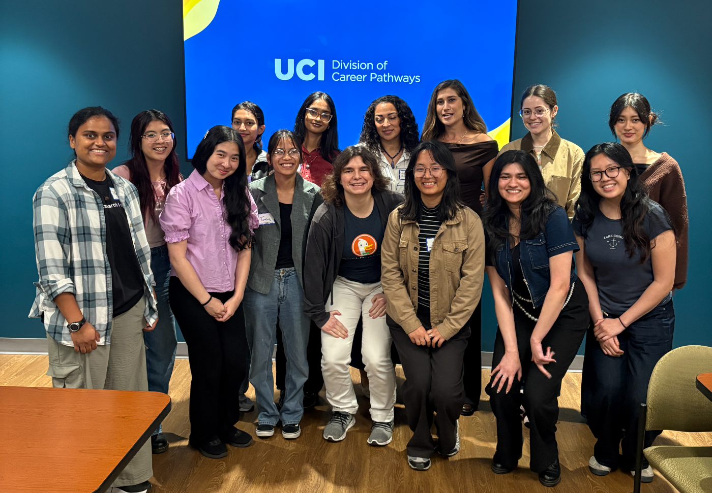
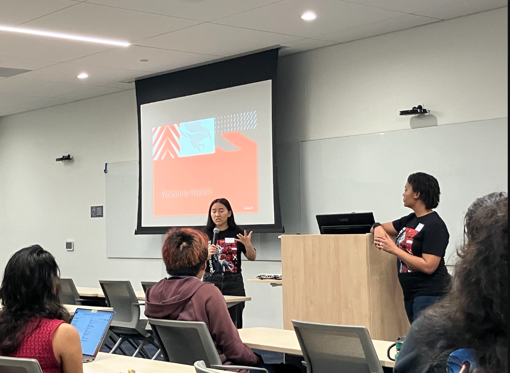
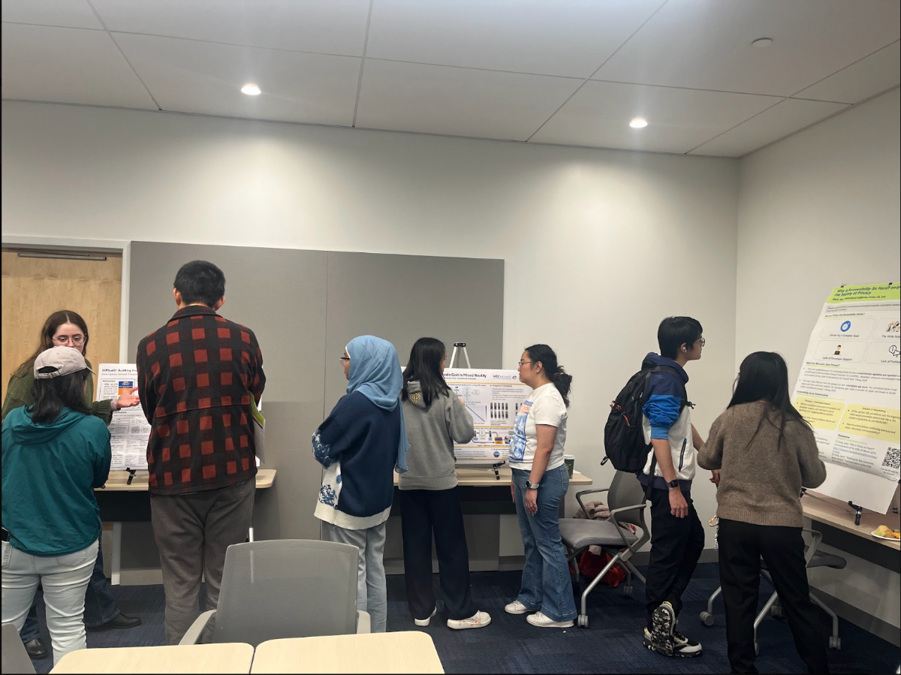
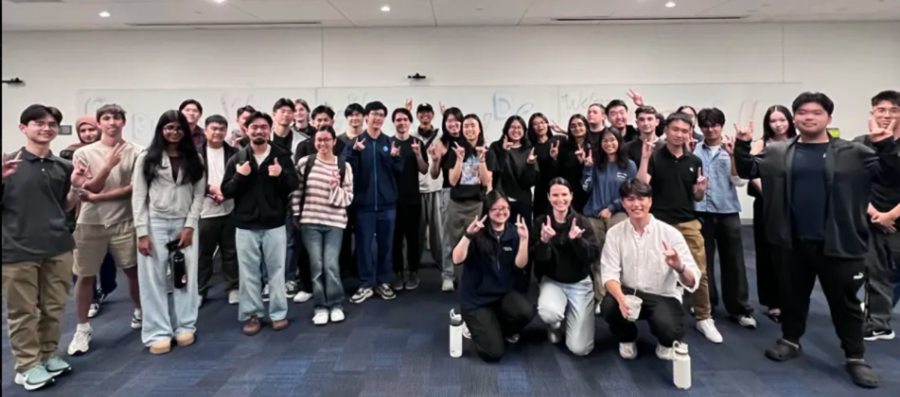
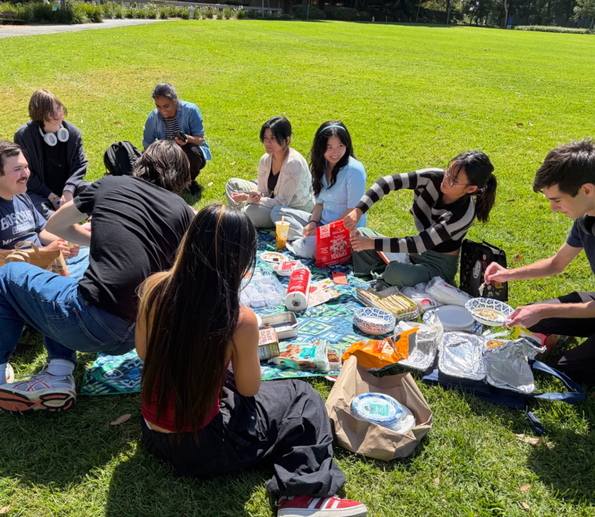
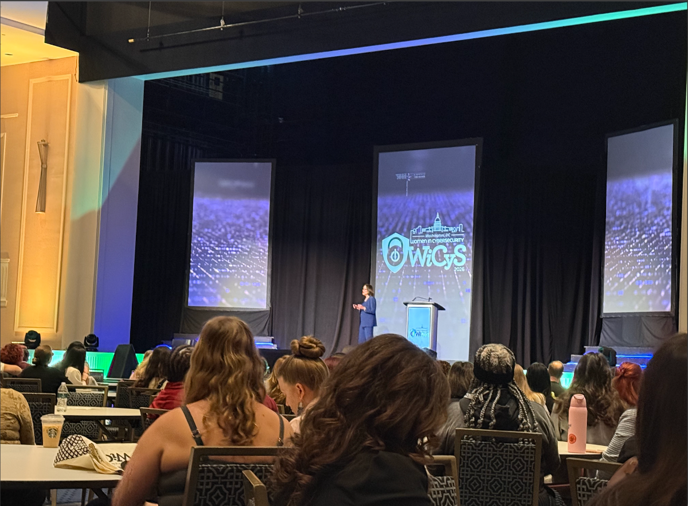

ABOUT
WICYS @ UCI
OUR STORY
Founded in 2019 as a research lab initiative at UCI, we're the student chapter of the national Women in CyberSecurity (WiCyS) organization. Last year we transitioned to fully undergrad-led leadership. This year we're building something new — a quarterly cybersecurity project competition, hands-on workshops, corporate tours, and a community that shows up for each other.

OUR MISSION
To recruit, retain, and advance women and underrepresented groups in cybersecurity through hands-on projects, workshops, networking, and community.
WHY WICYS?

Ship a security product you can point to in an interview.

Direct lines into the labs doing the work on campus.

Speakers, corporate tours, and mentors who hire.

Socials, study nights, and people who show up for you.

Travel with the chapter to the annual national conference.
FAQ
A: Yes! Everyone's welcome. All majors, all backgrounds, all experience levels.
A: Basic programming is preferred but not required. We teach cybersecurity tools, version control, and AI techniques in our workshops.